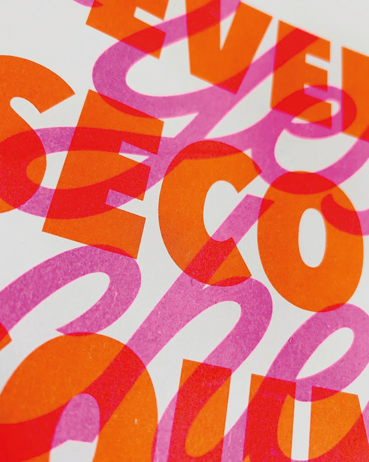

diseño Gráfico
Imágenes que comunican
El diseño gráfico está en constante evolución. Las tendencias visuales reflejan no solo lo que está de moda, sino también las necesidades, emociones y cambios sociales de cada momento. En 2025, el diseño se mueve entre lo digital y lo emocional, buscando experiencias visuales auténticas, impactantes y significativas. Entre las tendencias más fuertes se destaca el uso de tipografías expresivas que rompen las reglas tradicionales para convertirse en protagonistas del diseño. Las paletas de colores vibrantes y contrastantes
también están ganando espacio, buscando captar la atención en un mundo saturado de información. El estilo retro-futurista vuelve con fuerza, mezclando nostalgia con tecnología, mientras que el diseño minimalista emocional busca transmitir calidez y cercanía desde la sencillez. Además, el uso de inteligencia artificial en la creación visual está abriendo nuevas posibilidades, desafiando los límites de la creatividad humana.
David Consuegra (1939–2004)

Fue pionero del diseño gráfico en Colombia. Diseñó logotipos icónicos como los de Inravisión, el Museo de Arte Moderno de Bogotá y Fedearroz. También fue autor de libros influyentes como De marcas y símbolos y En busca del cuadrado.
Catalina Estrada (1974)
Ilustradora y diseñadora de estampados originaria de Medellín, actualmente radicada en Barcelona. Su estilo se caracteriza por reinterpretar el folclore latinoamericano con colores vibrantes. Ha colaborado con marcas como Disney, Paul Smith y Old Navy.
Carlos Duque (1946)
Carlos Duque es un diseñador gráfico colombiano reconocido por su fuerte compromiso político y social. Destacó en los años 80 con afiches icónicos como los de la campaña por el Sí en el plebiscito de 1988. Su estilo mezcla fotografía, collage y mensajes directos, convirtiéndolo en una figura clave del diseño gráfico en Colombia.
Tipografía con propósito
La tipografía es más que forma: es voz, ritmo y carácter. En el diseño gráfico, cada fuente transmite una intención. Una serif elegante puede sugerir tradición; una sans serif geométrica, modernidad. Diseñar no es solo decir algo, es cómo se dice. Elegir una fuente no es una decisión decorativa, es una declaración visual. En cada proyecto, la tipografía guía la mirada, marca el tono y genera conexión emocional. Un buen diseñador sabe cuándo dejar que la letra hable suave, y cuándo hacerla gritar. Por eso, más que estilo, se trata de intención.
